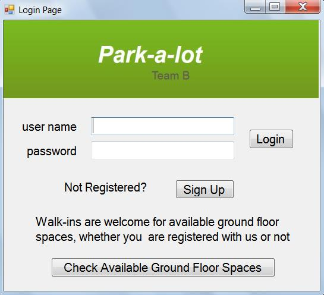

The Login Page

| The log in button executes code that 1.
checks the password database for a matching password according to the
username, then 2. if a match, to apply the user's permission level ('PL')
that is also stored in the the password database to determine if the user
will see the Customer page (PL=1) for that customer, or the Employee page
(PL=2) for that employee, or the Manager page (PL=3) (as understood now,
there's just one manager). (if password not a match, to say try again). (for employees, the manager both a. enters their username and password in this password database, and b. assigns a PL of 2). The sign in button executes code that displays the appropriate page. For registered customers, the customerID is passed to the the customer page. For registered employees, the employeeID is passed to the the employee page. (there is only one type of employee page for now, set up as a garage operator page) The sign up button executes code that displays the Sign Up page
button: Check Available Ground Floor Spaces |
| The sign up button executes code that 1.
checks that the email address box has an @ symbol in it, and checks that the
credit card box has 16 numbers in it, then if both check good, to 2. store
the info in the customer database for that customer ID number (ex, a husband
and wife could be using the same credit card, but be using park-a-lot
reservations differently). After storing the info,
the customer database will generate their membership number <the customerID
number + their first and last initials> and store it back into the customer
database, then, a message box will inform the customer what their membership
number is, and will ask them to make a note of it. Lastly, after the customer closes
the above message box: |
The Customer Page
| the customer page is mainly used to
schedule reservations The customerID has been
received from either the login page or the signup page, to be used by the
reservations database for (as below) 1. available spaces, 2. viewing and
modifying reservations, and used by both the reservations database and by
Billing if the customer wants to make the date and times a monthly
contract. (our reservations database will cover 6?, 12? months ahead) *more work to do here: implementing
plans in this customer page when the customer makes reservations (per our
Project Statement) for: |
Download TeamBWindowsFormCustomerPage.zip
The View Reservations Page
| This page is related to the specific
customer. This page is also used to modify reservations. The customerID is received from the customer page. on page_load: sends a request to the reservations database, and 1. customer name is displayed in a text box (or label) and 2. info on all reservations (along with the reservation ID number) are received, to be shown in a 2nd text box (or label? whichever: it must 'expand' vertically to show multiple reservations) label: To extend or
delete a reservation, enter the reservation ID number here |
Download TeamBWindowsFormViewReservationPage.zip
The Employee Page
The Manager Page